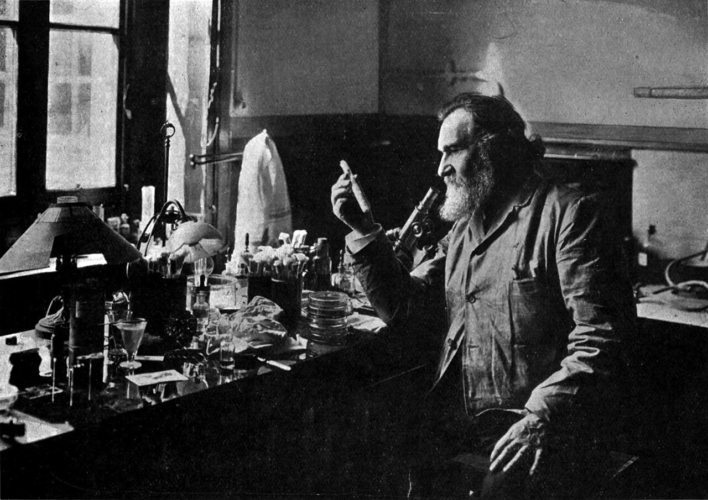

免疫系统的组成和功能
本期导读
免疫器官 · 免疫细胞 · 三道防线

视频原话 · 导读3 句
- 同学们好！这节课梳理人教版选择性必修一第四章第一节——免疫系统的组成和功能。8.3s
- 这一节是整个免疫调节的基础，高考常考免疫细胞的来源、三道防线的判断和免疫系统的三大功能。9.5s
- 我们按八个考点梳理，每个考点都讲清楚怎么考、怎么做。5.5s
免疫器官01#
免疫系统 = 免疫器官 + 免疫细胞 + 免疫活性物质
扁桃体
胸腺
淋巴结
脾
骨髓
骨髓免疫细胞发生、分化、发育；B细胞成熟
胸腺T细胞分化、发育、成熟（青春期后退化）
脾内含大量淋巴细胞
淋巴结沿淋巴管遍布全身，阻止和消灭微生物
扁桃体位于咽腭部，具有防御功能
考法
骨髓、胸腺：产生、成熟；脾、淋巴结、扁桃体：集中分布
视频原话5 句
- 考点一，免疫器官。免疫系统由免疫器官、免疫细胞和免疫活性物质三部分组成。8.4s
- 免疫器官主要由淋巴组织构成，包括扁桃体、胸腺、脾、淋巴结和骨髓。7.7s
- 骨髓是各种免疫细胞发生、分化、发育的场所；胸腺是T细胞分化、发育、成熟的场所，青春期以后会逐渐退化。11.3s
- 脾、淋巴结和扁桃体是免疫细胞集中分布的场所。淋巴结沿淋巴管遍布全身，能阻止和消灭侵入体内的微生物。11.4s
- 考法：骨髓和胸腺管免疫细胞的产生和成熟；脾、淋巴结、扁桃体管免疫细胞的集中分布和发挥作用。10.4s
免疫细胞02#
来源：骨髓中的造血干细胞
- 免疫细胞
- 淋巴细胞
- B细胞
- T细胞
- 辅助性T细胞
- 细胞毒性T细胞
- 树突状细胞
- 巨噬细胞
- 淋巴细胞
抗原呈递细胞
B细胞、树突状细胞、巨噬细胞
摄取、加工处理抗原，呈递抗原信息
易错
抗原呈递细胞不只是巨噬细胞；巨噬细胞既参与非特异性免疫，也参与特异性免疫
视频原话5 句
- 考点二，免疫细胞。免疫细胞是执行免疫功能的细胞，都来自骨髓中的造血干细胞。8.4s
- 免疫细胞包括各种类型的白细胞，主要有淋巴细胞、树突状细胞和巨噬细胞等。淋巴细胞又分为B淋巴细胞和T淋巴细胞。12.0s
- T细胞又分为辅助性T细胞和细胞毒性T细胞等，它们在特异性免疫中分工不同。8.1s
- B细胞、树突状细胞和巨噬细胞都能摄取和加工处理抗原，并把抗原信息暴露在细胞表面，传递给其他免疫细胞，统称为抗原呈递细胞。13.3s
- 易错：抗原呈递细胞不只是巨噬细胞，B细胞也是；巨噬细胞既参与非特异性免疫，也参与特异性免疫。10.6s
B细胞与T细胞03#
易错
产生都在骨髓；成熟：B细胞在骨髓，T细胞在胸腺 → 切除胸腺主要影响T细胞
视频原话5 句
- 考点三，B细胞和T细胞从哪里来，又在哪里成熟？5.3s
- 它们都来自骨髓中的造血干细胞。3.3s
- 一部分在骨髓中分化、发育、成熟，成为B细胞；5.3s
- 另一部分迁移到胸腺中成熟，成为T细胞。成熟以后，它们随血液和淋巴循环，分布到淋巴结、脾等处。10.4s
- 易错：B细胞和T细胞产生的场所都是骨髓，区别在于成熟的场所——B细胞在骨髓，T细胞在胸腺。所以切除胸腺，主要影响的是T细胞。14.0s
免疫活性物质04#
由免疫细胞或其他细胞产生的、发挥免疫作用的物质
抗体
来源：浆细胞分泌
专门应对抗原的蛋白质
细胞因子
来源：主要由辅助性T细胞分泌
白细胞介素、干扰素、肿瘤坏死因子等
溶菌酶
来源：唾液腺、泪腺细胞等也能分泌
溶解细菌的细胞壁
易错
免疫活性物质不一定由免疫细胞产生：唾液腺、泪腺细胞也能分泌溶菌酶
视频原话5 句
- 考点四，免疫活性物质，是由免疫细胞或其他细胞产生的、发挥免疫作用的物质。7.8s
- 抗体是机体产生的专门应对抗原的蛋白质，由浆细胞分泌。6.0s
- 细胞因子主要由辅助性T细胞分泌，包括白细胞介素、干扰素、肿瘤坏死因子等。8.2s
- 溶菌酶能溶解细菌的细胞壁，唾液、泪液和血浆中都有。6.0s
- 易错：免疫活性物质不一定由免疫细胞产生，唾液腺、泪腺细胞也能分泌溶菌酶。8.3s
人体的三道防线05#
第一道防线
皮肤、黏膜
阻挡；纤毛清扫；唾液、泪液、胃液中的杀菌物质
第二道防线
体液中的杀菌物质和吞噬细胞
溶菌酶；巨噬细胞、树突状细胞吞噬病原体
第三道防线
免疫器官和免疫细胞
借助血液循环和淋巴循环
非特异性
免疫
免疫
特异性
免疫
免疫
易错
唾液、泪液、胃液在与外界相通的腔道中 → 其中的杀菌物质属于第一道防线
解题方法：先看物质在体表、腔道，还是在体液中
解题方法：先看物质在体表、腔道，还是在体液中
视频原话5 句
- 考点五，人体的三道防线。3.0s
- 第一道防线是皮肤和黏膜，比如皮肤的阻挡作用，呼吸道黏膜上纤毛的清扫作用。7.7s
- 第二道防线是体液中的杀菌物质，如溶菌酶，以及吞噬细胞，如巨噬细胞和树突状细胞。8.7s
- 第三道防线主要由免疫器官和免疫细胞，借助血液循环和淋巴循环组成。7.2s
- 易错：唾液、泪液、胃液都在与外界相通的腔道里，其中的杀菌物质属于第一道防线。解题方法：先看物质在体表、腔道，还是在体液中。14.0s
非特异性与特异性06#
| 比较项目 | 非特异性免疫 | 特异性免疫 |
|---|---|---|
| 组成 | 第一、二道防线 | 第三道防线 |
| 形成 | 生来就有（先天） | 出生后与病原体接触形成 |
| 对象 | 对多种病原体都有作用 | 只针对特定的抗原 |
| 联系 | 是特异性免疫的基础 | 二者共同完成免疫功能 |
解题方法
看是否针对某种特定的病原体：患过麻疹不再患 → 特异性；巨噬细胞吞噬多种病菌 → 非特异性
视频原话5 句
- 考点六，非特异性免疫与特异性免疫。4.3s
- 第一、二道防线是人人生来就有的，不针对某一类特定的病原体，对多种病原体都有防御作用，叫做非特异性免疫。10.9s
- 第三道防线是出生后，在与病原体接触的过程中形成的，只针对特定的抗原，叫做特异性免疫。8.8s
- 二者紧密联系：非特异性免疫是特异性免疫的基础，二者共同完成免疫功能。7.8s
- 解题方法：看是否针对某种特定的病原体。患过麻疹不再患麻疹，属于特异性免疫；巨噬细胞吞噬多种病菌，属于非特异性免疫。13.0s
免疫系统三大功能07#
免疫防御
对象
外来抗原性异物（病原体）
功能异常
过强：过敏反应
过弱：反复感染
免疫自稳
对象
自身衰老或损伤的细胞
功能异常
异常：自身免疫病
免疫监视
对象
体内突变的细胞（癌细胞）
功能异常
低下：肿瘤、持续病毒感染
考法
对付外来病原体 → 防御；清除衰老、损伤的细胞 → 自稳；清除癌细胞 → 监视
视频原话5 句
- 考点七，免疫系统的三大功能。3.3s
- 免疫防御：机体排除外来抗原性异物，是最基本的功能。功能过强会发生过敏反应，过弱则容易反复感染。10.7s
- 免疫自稳：清除衰老或损伤的细胞，维持内环境稳态。功能异常时，容易发生自身免疫病。9.4s
- 免疫监视：识别和清除突变的细胞，防止肿瘤发生。功能低下时，容易发生肿瘤或持续的病毒感染。10.1s
- 考法：根据实例判断功能——对付外来病原体是防御，清除衰老损伤的细胞是自稳，清除癌细胞是监视。9.9s
抗原与抗体08#
抗原
能引发免疫反应的物质，大多是蛋白质
不一定来自外界：自身衰老、损伤、癌变的细胞也可成为抗原
抗体
浆细胞分泌的免疫球蛋白，与抗原特异性结合
主要分布在血清中，组织液和外分泌液中也有
易错
抗原—抗体结合形成沉淀等，最终由其他免疫细胞吞噬消化；抗体不能直接清除病原体
视频原话5 句
- 考点八，抗原与抗体。2.7s
- 抗原是能引发免疫反应的物质，大多数是蛋白质，比如病毒、细菌表面的蛋白质。8.0s
- 抗原不一定来自外界，自身衰老、损伤或癌变的细胞，也可能成为抗原。7.3s
- 抗体是浆细胞分泌的免疫球蛋白，能与相应抗原特异性结合，主要分布在血清中，组织液和外分泌液中也有。10.2s
- 易错：抗体与抗原结合后，形成沉淀或细胞集团，最终由其他免疫细胞吞噬消化，抗体本身不能直接清除病原体。11.3s
易错速查✓
先自己判断，再点按钮查看对错与解析。
- 1B细胞和T细胞都在骨髓中成熟说法错误：T细胞在胸腺中成熟
- 2免疫活性物质都由免疫细胞产生说法错误：溶菌酶等也可由其他细胞产生
- 3胃液中的盐酸杀菌属于第一道防线说法正确。
- 4巨噬细胞只参与非特异性免疫说法错误：也参与特异性免疫
- 5清除体内癌变的细胞属于免疫自稳说法错误：属于免疫监视
- 6抗体能与相应抗原特异性结合说法正确。
分清防线和功能，免疫开个好头！
视频原话 · 易错速查5 句
- 最后，用六道判断题检验一下。3.6s
- B细胞和T细胞都在骨髓中成熟？错，T细胞在胸腺中成熟。免疫活性物质都由免疫细胞产生？错，溶菌酶等也可以由其他细胞产生。14.0s
- 胃液中的盐酸杀菌属于第一道防线？对。巨噬细胞只参与非特异性免疫？错，它也参与特异性免疫。10.7s
- 清除体内癌变的细胞属于免疫自稳？错，属于免疫监视。抗体能与相应抗原特异性结合？对。10.3s
- 八个考点串起来：先认清免疫系统的三个组成部分，再分清三道防线和两类免疫，最后记住三大功能。掌握这些，第四章就开了个好头！我们下期再见！14.9s
图片来源
图片来源：Wikimedia Commons —— Maurice Branger《Dr Metchnikoff in his Laboratory》Public domain
Photo: Maurice Branger, public domain